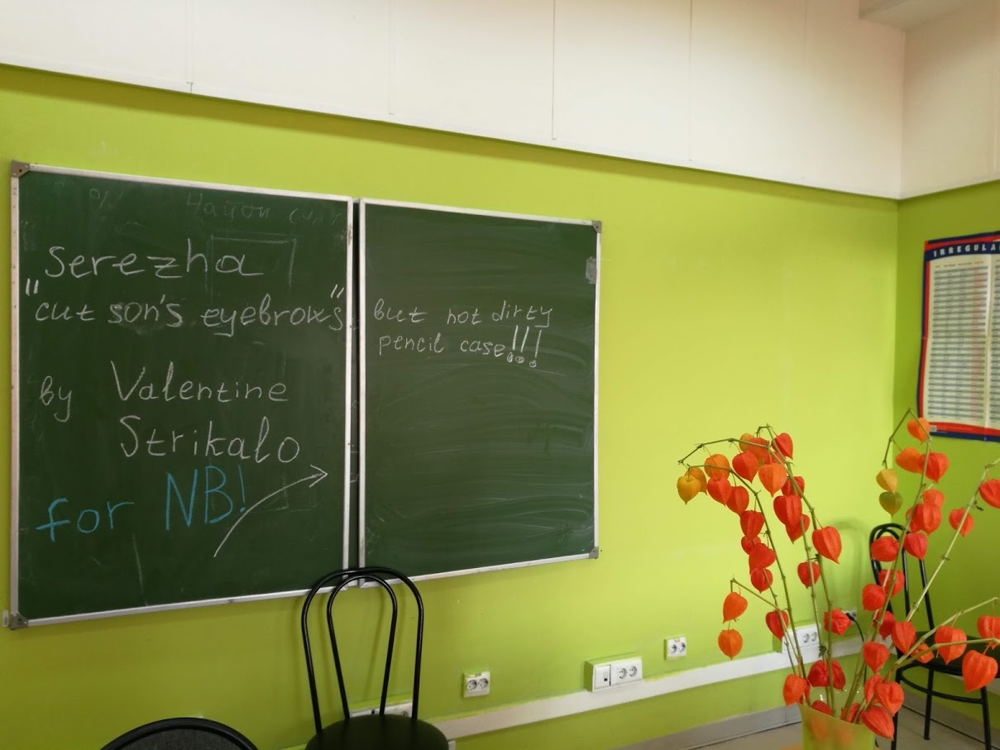
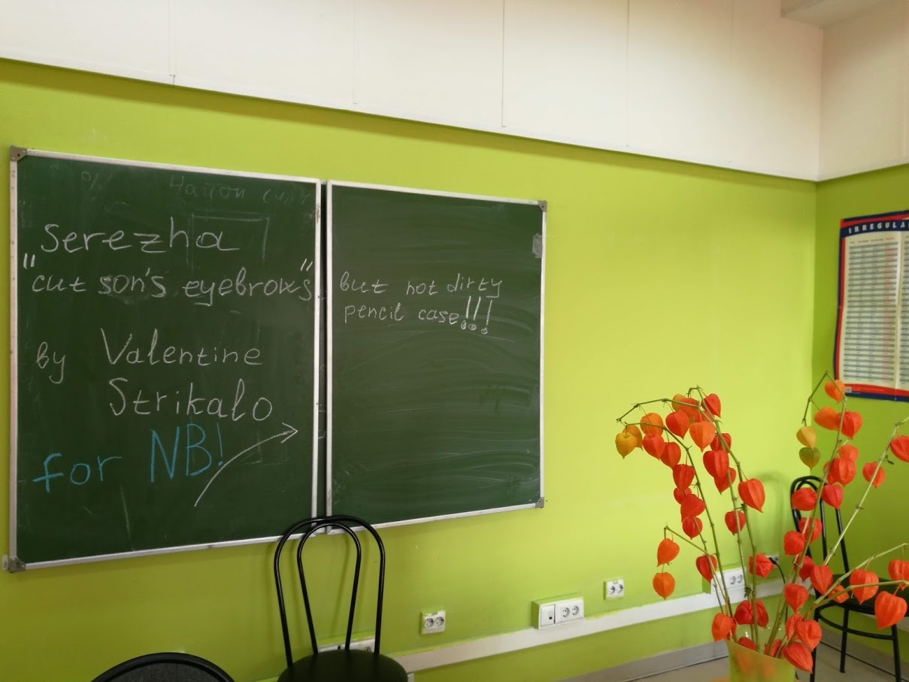
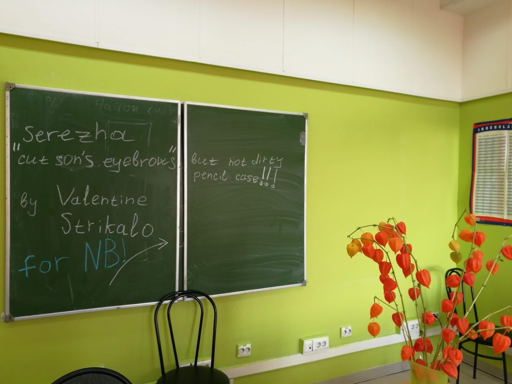
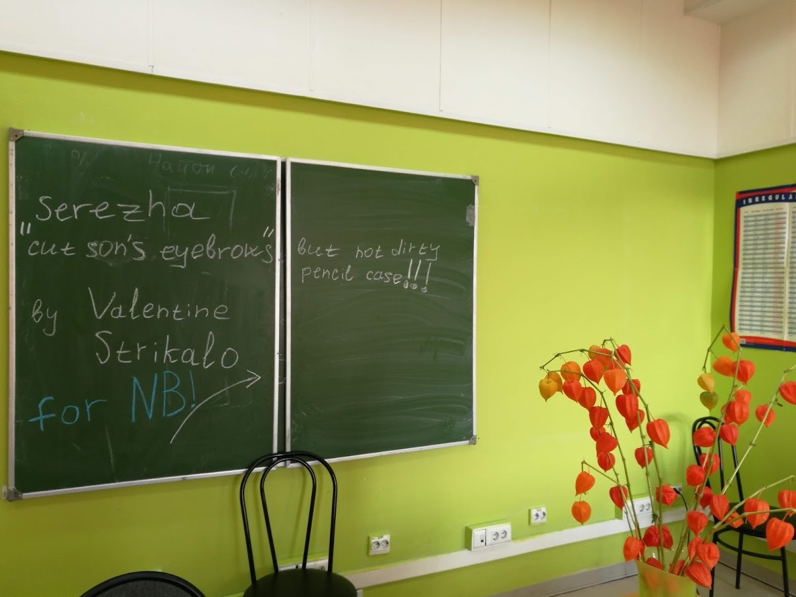

 

*тук-тук-тук*
- Hello, Friend! How are you? :)
- Oh... I am not so happy.
- My Dear, what's the matter?
- I have a lot of problems with all my school subjects... Especially with English, I think, You know it.
- Yes, I do... And I'm going to help you! :)
- But how? I'm tired, so I can't rewrite a test to get a good mark...
- Oh... I sympathise with you deeply... Oh, I know, what to do! I have a nice thing to get your grades up and make you less sleepy. I have an interesting quiz!
- Hmmmm... OK.
- OK, let's begin!
How do you pronounce “thorough”?
[соро’угхгхтъ]
[’Tарэ]
[’фороо]
[*Непередаваемые звуки из Преисподней*]
He was sitting on a sill hidden behind the curtains. Which word is the best to describe the meaning of the underlined word?
Холм
Подоконник
Барьер
Сцена
That’s the way the cookie crumbles! What is the best translation of this sentence?
Именно так и крошится булочка!
Вот так девушка!
Вот такие пироги!
Как печеньку у младенца отобрать!
Which sentence is the best to describe the meaning of the this picture?
How to spell the playwright’s full name.
How to pronounce the name of the fruit.
An example of the Present Simple tense.
How to mispronounce the playwright’s surname.
What is the English for “выпускник школы"?
school finisher
school liver
graduator
school leaver
- Yohoo! You've passed the test! Thank you, good luck, have fun!
- No, thank YOU!!! :)
Дальше